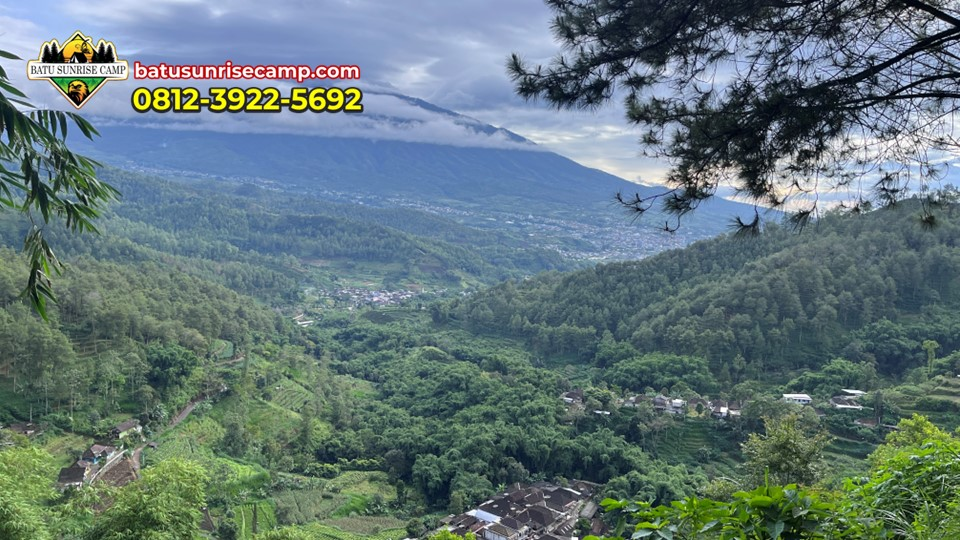

Siapa bilang camping itu cuma cocok buat anak muda atau komunitas pecinta alam? Justru camping bareng keluarga bisa jadi pengalaman yang jauh lebih berkesan. Apalagi kalau tempatnya nyaman dan aman kayak di Batu Sunrise Camp.
Batu ground camping sekarang udah banyak berubah dari image-nya yang dulu. Fasilitasnya makin lengkap, area-nya makin terawat, dan yang paling penting, aman buat anak-anak. Di artikel ini saya mau berbagi pengalaman dan tips camping bareng keluarga di Batu Sunrise Camp supaya liburanmu berjalan lancar tanpa drama.
1. Kenapa Harus Camping Bareng Keluarga?
Di era digital kayak sekarang, waktu berkualitas bareng keluarga itu makin langka. Anak-anak sibuk main gadget, orang tua sibuk kerja. Camping jadi solusi paling sederhana buat memutus semua itu dan kembali terhubung satu sama lain.
Di area batu ground camping Batu Sunrise Camp, nggak ada TV, nggak ada WiFi kencang yang bikin anak-anak betah scrolling. Yang ada cuma alam terbuka, udara segar, dan waktu yang bisa dihabiskan bersama tanpa gangguan. Percaya deh, setelah camping bareng keluarga di sini, hubungan antar anggota keluarga bakal terasa lebih dekat.
Selain itu, camping juga ngajarin anak-anak banyak hal yang nggak bisa mereka pelajari di sekolah. Mulai dari cara mendirikan tenda, memasak makanan sederhana, sampai menghargai alam dan lingkungan sekitar. Ini pelajaran hidup yang nilainya nggak ternilai.
2. Persiapan Khusus Kalau Bawa Anak-Anak
Camping bareng anak memang butuh persiapan ekstra dibanding camping sama teman. Tapi jangan khawatir, nggak sesulit yang dibayangkan kok. Yang penting kamu tahu apa aja yang harus disiapkan:
- Pakaian hangat berlapis — Anak-anak lebih rentan kedinginan. Bawa minimal 3 lapis baju termasuk jaket tebal.
- Sleeping bag ekstra tebal — Kalau perlu bawa selimut tambahan dari rumah.
- Obat-obatan anak — Obat flu, demam, plester luka, dan lotion anti nyamuk wajib ada.
- Camilan favorit — Bawa snack yang disukai anak-anak buat jaga mood mereka.
- Mainan sederhana — Bola kecil, kartu UNO, atau buku gambar bisa jadi hiburan tambahan.
- Senter atau headlamp — Anak-anak biasanya takut gelap, jadi pastikan ada penerangan yang cukup.
3. Paket Camping yang Cocok untuk Keluarga
Di Batu Sunrise Camp, saya sarankan pilih paket Sunrise 2 atau Sunrise 3 kalau camping bareng keluarga. Kenapa? Karena paket ini udah termasuk tenda yang cukup besar, matras, dan sleeping bag. Jadi kamu nggak perlu repot bawa peralatan berat dari rumah.
Paket Sunrise 3 khususnya cocok banget buat keluarga karena tenda-nya lebih luas dan bisa menampung 4-5 orang. Anak-anak juga punya ruang yang cukup buat bergerak di dalam tenda tanpa merasa sempit.
Harganya pun sangat terjangkau kalau dihitung per orang. Dibanding booking villa atau hotel di Kota Batu yang bisa jutaan per malam, batu ground camping di Batu Sunrise Camp jauh lebih hemat tapi pengalamannya justru lebih kaya.
4. Kegiatan Seru yang Bisa Dilakukan Bareng Anak
Ini nih bagian yang paling ditunggu. Ada banyak kegiatan menyenangkan yang bisa kamu lakukan bareng anak-anak di area batu ground camping:
- Masak bareng — Ajak anak-anak bantu masak makanan simpel kayak roti bakar atau Indomie. Mereka pasti senang dan bangga bisa membantu.
- Nonton bintang — Malam hari di Batu Sunrise Camp langitnya cukup cerah buat lihat bintang. Ajak anak-anak rebahan sambil menunjuk konstelasi bintang.
- Jalan pagi — Ajak anak-anak jalan santai menyusuri area sekitar sambil mengenal tanaman dan burung.
- Bercerita di depan tenda — Momen klasik camping yang nggak pernah basi. Ceritakan dongeng atau kisah seru sambil minum coklat hangat.
- Fotografi bersama — Dokumentasikan momen keluarga dengan background alam yang indah.
5. Tips Aman Camping dengan Anak Kecil
Keamanan tentu jadi prioritas utama kalau bawa anak-anak ke area batu ground camping. Berikut beberapa tips yang perlu kamu perhatikan:
- Pilih spot camping yang rata dan jauh dari area tebing atau lereng.
- Pastikan anak-anak selalu dalam pengawasan, terutama saat malam hari.
- Ajarkan anak-anak untuk tidak menyentuh kompor atau alat masak yang panas.
- Bawa kotak P3K lengkap dan tahu lokasi fasilitas kesehatan terdekat.
- Pasang penerangan yang cukup di sekitar area tenda supaya anak nggak takut.
Di Batu Sunrise Camp sendiri, area camping dijaga 24 jam oleh tim pengelola. Jadi dari segi keamanan, kamu nggak perlu khawatir. Tim juga siap membantu kalau ada keperluan darurat.
6. Momen Berharga yang Akan Tercipta
Yang bikin camping bareng keluarga di batu ground camping spesial itu bukan fasilitasnya, bukan pemandangannya, tapi momen-momen kecil yang tercipta di sana. Momen ketika anak pertama kali melihat sunrise dan matanya berbinar-binar. Momen ketika pasangan kamu tersenyum sambil meniup kopi hangat di depan tenda.
Momen ketika seluruh keluarga duduk melingkar, ngobrol tanpa ada yang pegang HP, ketawa bareng karena hal-hal sepele. Semua itu adalah kenangan yang bakal dibawa seumur hidup. Dan kamu nggak perlu keluar jutaan rupiah buat mendapatkannya. Cukup satu malam di Batu Sunrise Camp.
7. FAQ
Apakah batu ground camping di Batu Sunrise Camp aman untuk anak balita?
Aman, selama dalam pengawasan orang tua. Kami sarankan pilih spot camping yang rata dan hindari area yang terlalu dekat dengan tebing. Tim kami juga bisa bantu rekomendasikan spot terbaik untuk keluarga.
Ada toilet yang bersih untuk anak-anak?
Ya, fasilitas toilet di area Batu Sunrise Camp cukup bersih dan terawat. Lokasinya juga nggak terlalu jauh dari area camping utama, jadi aman untuk anak-anak.
Bisa request tenda yang lebih besar untuk keluarga?
Bisa. Hubungi tim kami lewat WhatsApp untuk request tenda family size. Biasanya tersedia di paket Sunrise 3 yang memang dirancang untuk rombongan atau keluarga.
8. Kesimpulan
Camping bareng keluarga di batu ground camping Batu Sunrise Camp adalah pengalaman yang wajib dicoba setidaknya sekali seumur hidup. Nggak perlu mahal, nggak perlu ribet, yang penting niat dan persiapan yang tepat. Kenangan yang tercipta di sini jauh lebih berharga dari liburan mewah mana pun.
Yuk, ajak keluarga kamu camping di Batu Sunrise Camp. Hubungi 081239225692 lewat WhatsApp buat booking paket keluarga dan buatkan mereka kenangan yang nggak akan pernah dilupakan.

Muhammad Affizar Ibrahim Alkautsar
Percaya bahwa camping bareng keluarga adalah investasi kenangan terbaik.